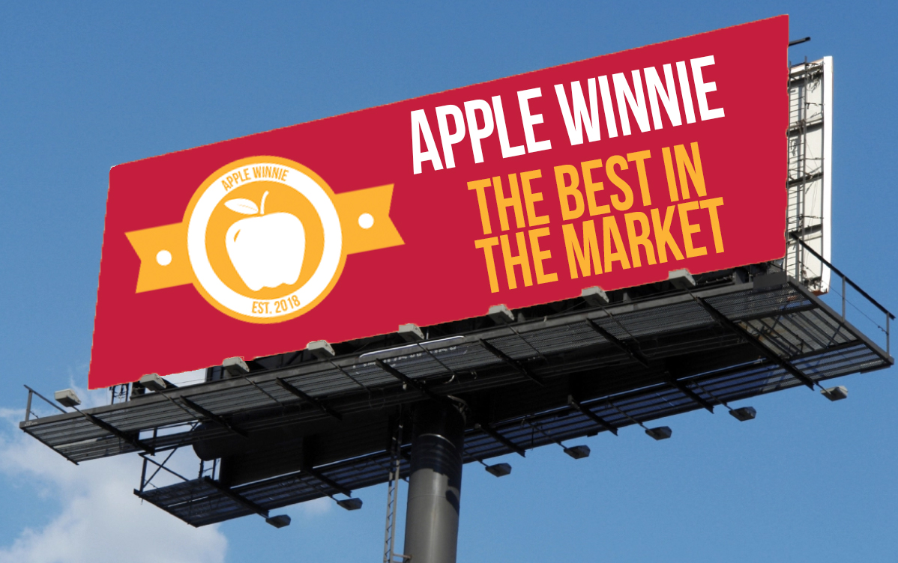

Apple Winnie
Apple Winnie, is New Apple concept which has farmed new ground around all of constanza. We have discovered some perfect soil around this location which will help our apples grow perfectly organically and fresh. We have around 500 acres in this land and we also have the best workers. Apples trees can grow in a wide range of soils from medium textured clays to gravelly sands. However, poor soils will produce poor results and the best crops are found on fertile sandy soils and loams. Soils should be well drained, and we can asure you we are number one in perfection in this area.